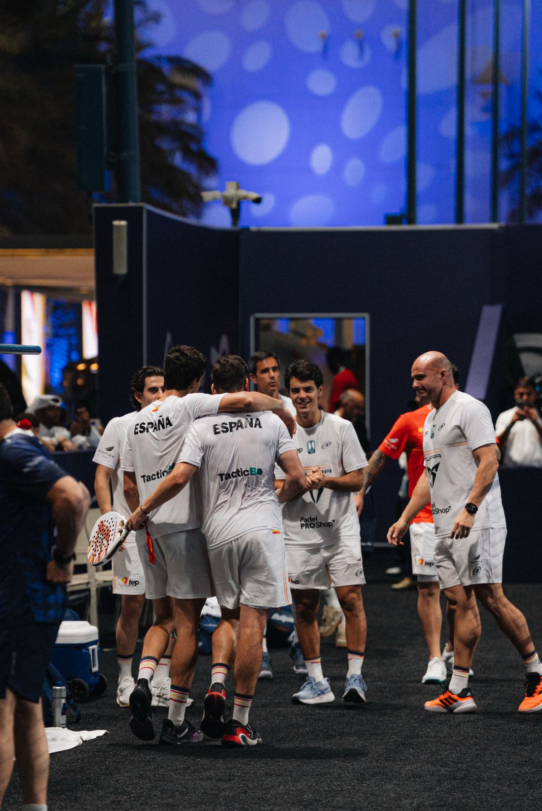

News · Mundial 2026
Spain are through to the World Cup quarter-finals in Qatar and Tapia wins on his debut
Spain beat Paraguay 3-0, with Javi Leal making his debut, and are sure of a place in the last eight. Argentina beat the Netherlands 3-0 in Tapia's first match. The women, two more 3-0s. The groups finish today.
By Luis González · · 4 min read

Arturo Coello: four days, three partners.
On Saturday he won Kuwait with Tapia. On Monday, at the World Cup, he won with Paquito Navarro. On Tuesday, with Aimar Goñi.
Three partners. Three wins.
And on Tuesday, at last, it was Tapia's turn too.
Spain: Javi Leal's debut
Spain beat Paraguay 3-0. With the clean sweep, they are into the quarter-finals: whatever happens today, they finish in the top two of their group.
- Yanguas and Javi Leal: 6-4, 6-3 over González and Dehnike.
- Paquito Navarro and Lebrón: 6-0, 6-2 over Petit and Popovich.
- Goñi and Coello: 6-1, 6-3 over Miranda and Rodríguez.

The first point came from Javi Leal. He joined the squad on Friday, after Ale Galán's injury. On Tuesday he played his first ever World Cup match. One hour and six minutes.
And he won.
Lebrón and Paquito were the quickest: 40 minutes.
Goñi, who suffered for two hours and 13 minutes with Yanguas on Monday, needed 44 with Coello.
Jon Sanz and Coki Nieto didn't play. For Paraguay, neither did Martín Abud.
Argentina: Tapia's turn
Argentina beat the Netherlands 3-0, the team that had beaten France on Monday.
- Tapia and Libaak: 6-4, 6-2 over Richters and Roper.
- Stupaczuk and Arce: 6-1, 6-3 over Van Opstal and Prins.
- Augsburger and Chingotto: 6-3, 6-4 over Nolten and Van Betuw.
Tapia and Libaak, who didn't play on Monday, won the first point. Libaak is the man who won the point that decided the 2024 World Cup.
Augsburger played with Chingotto. A detail: both of their partners on the tour are Spanish. Lebrón also won on Tuesday, for Spain. Galán is missing the World Cup through injury.
More work than on Monday. Against Australia, Argentina dropped three games. Against the Netherlands, 17. Almost three hours on court across the three matches.
Today, France. If Argentina win, they top the group.
Qatar, two match points away
The most dramatic tie of the day didn't involve the favourites.
Hosts Qatar lost 2-1 to Chile. And they had two match points to win it.
The brothers Rashed and Mashari Nawaf won the first match, 6-3, 6-3. Chile levelled. In the third, Mohammed Saadon and Hassan Waly took the first set 6-2 and had two match points in the second. They didn't convert them. Muñoz and Torres turned it around: 2-6, 7-6, 6-3. Almost two hours, in front of a full stand.
In group D, Italy and Brazil are still unbeaten. Today they play for top spot.
The women, two more 3-0s
Spain beat Great Britain 3-0. They dropped three games in the whole tie.

Ari Sánchez and Andrea Ustero played, three days after losing the Kuwait final to Triay and Brea. Each with a different partner. Ari and Paula Josemaría, 6-0, 6-1. Andrea and Martina Calvo, 6-0, 6-0. Marta Ortega and Bea González, 6-1, 6-1.
Argentina beat Belgium 3-0. Delfi Brea, the other Kuwait champion, won 6-0, 6-0 with Martina Fassio.
Today, Spain face Brazil: if they win, they top the group. Argentina and France are already in the quarter-finals and play for first place.
Today, the last day of the groups
- 12:00: the women. Spain v Brazil and Argentina v France.
- 16:00: the men. Spain v the UAE, Argentina v France and Sweden v Paraguay, which decides the other place in Spain's group.
Times are CET; in Argentina, four hours earlier. Where to watch, here. Tomorrow, the quarter-finals.
Coello and Tapia have both won this week.
Each on his own side. As it should be until Saturday.
— Luis González
Advertisement

Advertisement